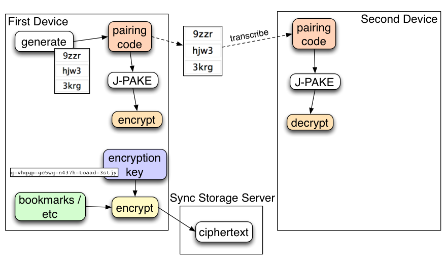
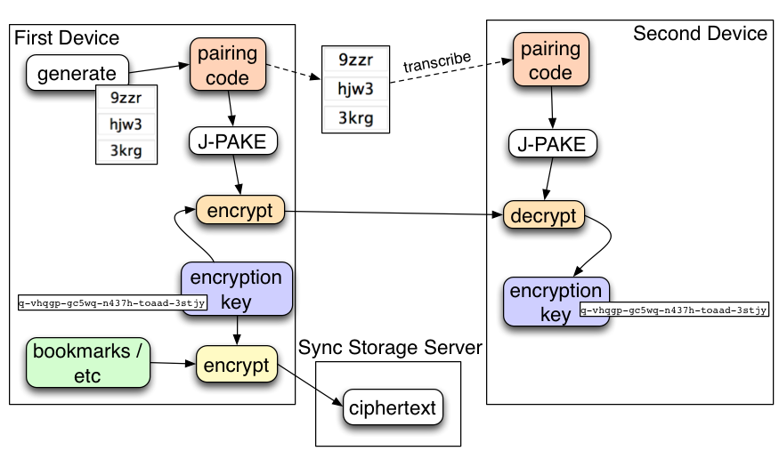
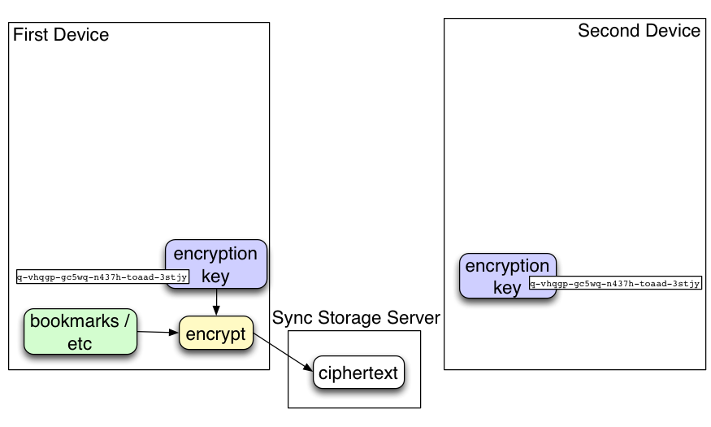
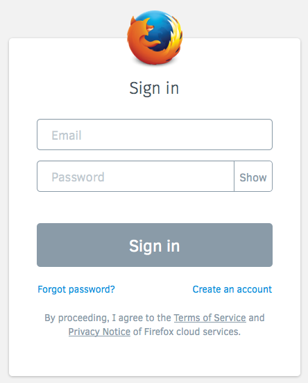
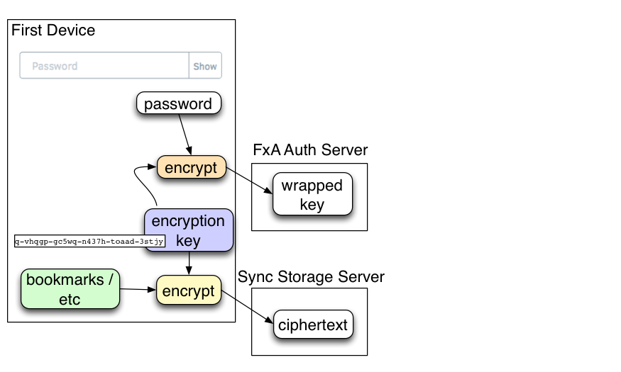
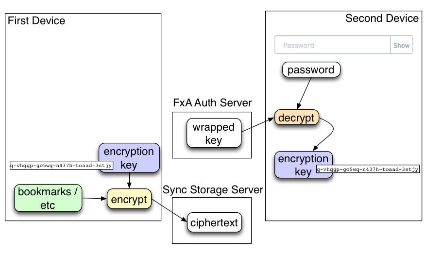
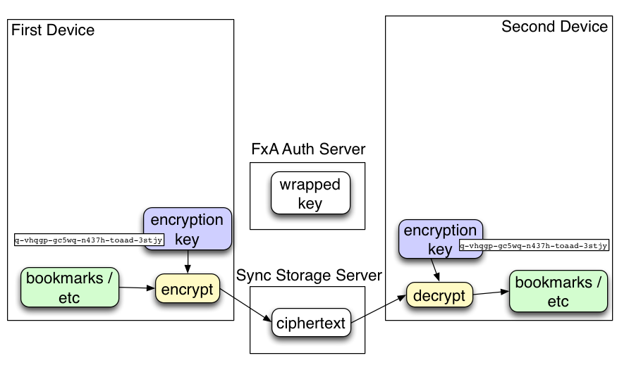

Firefox Sync and Firefox Accounts in FF29
Brian Warner
warner@mozilla.com
Outline
- Old FF Sync: design, pairing, problems
- New FF Sync: setup
- Introducing Firefox Accounts (FxA)
- FxA + Firefox Sync
Firefox Sync
- Introduced in Firefox 4.0 (March 2011)
- Synchronizes:
- bookmarks, history, open-tabs
- passwords, add-ons, prefs
- Between two or more Firefox browsers
Sync Security
- All data is encrypted
- Sync Storage Server only holds ciphertext
- Each connected browser knows the key
- Nobody else knows the key
Old Sync: Pairing

Old Sync Security
- random encryption key generated by first device

Old Sync Security
- pairing transfers the key to second device
Old Sync Security
- pairing transfers the key to second device

Old Sync Security
- pairing transfers the key to second device

Old Sync Security
- single-use pairing code is forgotten

Old Sync Security
- second device uses shared key to decrypt data
Old Sync Problems
- not useful for single device, surprising setup process
New Sync: FF29
- secure sync one or more devices with cloud
- conventional password-based signin

What is a Firefox Account?
- Single sign-on for a variety of Mozilla services
- Usable in any browser
- But some features will only be used by Firefox at first
What is FxA used for?
- Firefox Sync (as of FF29)
- Marketplace (soon)
- Where's My Fox (soon)
- other upcoming Mozilla services

Proving Control of a Firefox Account
- To use an account, you must prove:
- the ability to receive email
- knowledge of account password
What does a Firefox Account get you?
- encryption keys
- signed BrowserID assertions
How is FxA used by Sync?
- assertion enables read/write of ciphertext (WORDSMITH THIS)
- kB key encrypts data
FxA Sync Security
- random encryption key generated by first device
- wrapped by password, then stored on server
- retrieved by second device, unwrapped
- still end-to-end encryption
- but based on password, not pairing
- forgot password requires account reset, which erases data
New Sync Security
- random encryption key generated by first device

New Sync Security
- key wrapped by user password, stored on auth server

New Sync Security
- second device starts with password
New Sync Security
- fetches from auth server, unwraps key

New Sync Security
- second device uses shared key to decrypt data

Protecting kB
- server does not learn password or kB
Old Sync Accounts
- pre-FF29 Sync accounts will continue to work
- .. but aren't interoperable with new FxA-based accounts
- same backend, only difference is key management
kA vs kB
- kA:
- known by fxa-auth-server
- immutable: persistent through account reset
- user-recoverable by answering email challenge
- kB:
- protected by user password
- erased/reset upon account reset
- not recoverable if password is forgotten
- used for Sync data
- Applications use derivatives, not raw kA/kB